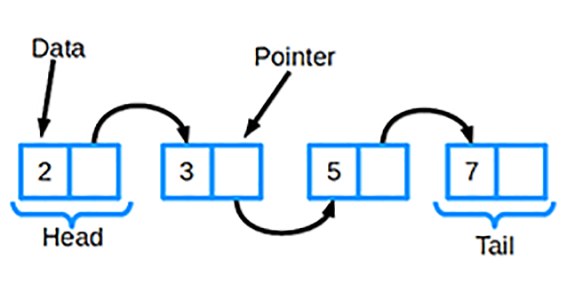

Рейтинг алгоритмов и структур данных

Связный список является одной из самых основных структур данных.
Его часто сравнивают с массивом,
поскольку многие другие структуры данных
могут быть реализованы либо с помощью массива, либо с помощью связного списка.
У каждого из них есть свои преимущества и недостатки.
Связный список состоит из группы узлов, которые вместе представляют последовательность. Каждый узел содержит две вещи:
Существуют также дважды связанные списки,
в которых каждый узел имеет указатель и на следующий, и на предыдущий элемент в списке.
Самые основные операции в связанном списке включают добавление элемента в список,
удаление элемента из списка и поиск в списке для элемента.